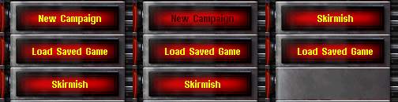

在uimd.ini里添加修改：
[UISettings]►SinglePlayerButton= (action)
单人游戏
[UISettings]►NetworkButton= (action)
局域网
[UISettings]►WWOnlineButton= (action)
国际网络
[UISettings]►MoviesAndCreditsButton= (action)
电影和制作人员名单
[UISettings]►CampaignButton= (action)
战役
[UISettings]►SkirmishButton= (action)
遭遇战
[UISettings]►SneakPeeksButton= (action)
先睹为快
[UISettings]►PlayMoviesButton= (action)
放小电影
[UISettings]►ViewCreditsButton= (action)
制作人员
以下是可用动作:
default：不变
disable：放在那但是没法点
hide：隐藏
message：点击会显示确认框里面的CSF是TXT_X_MSG，X相当于这玩意儿的名称
credits：开始看制作人员名单
sneakpeek：看先睹为快